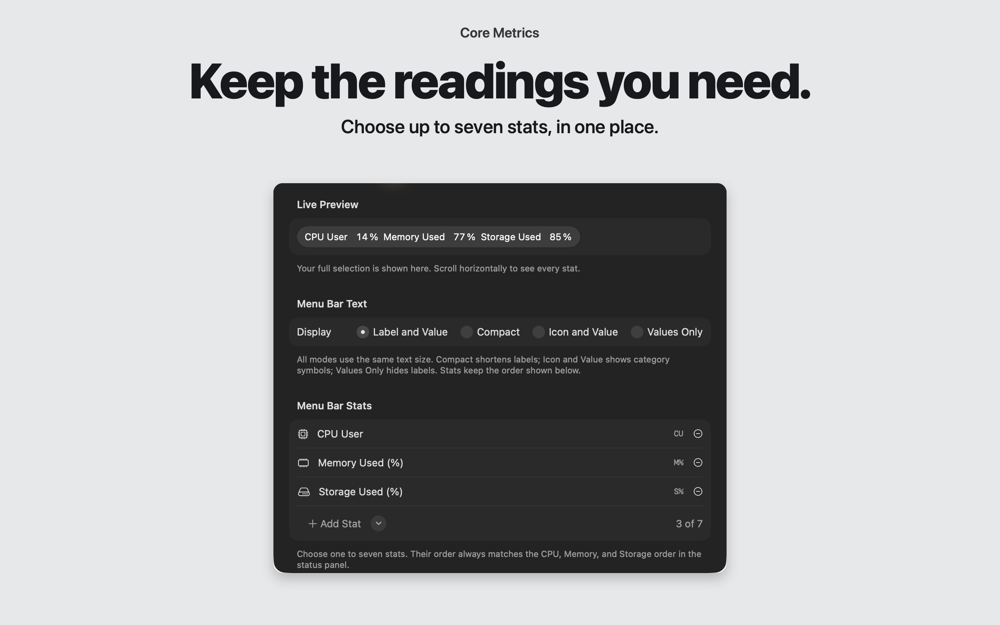
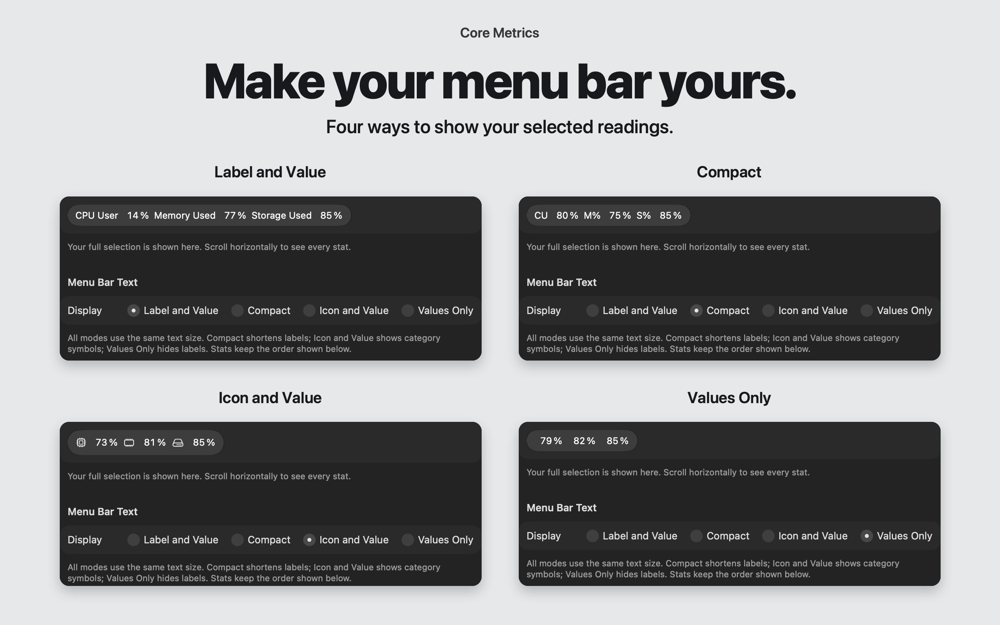
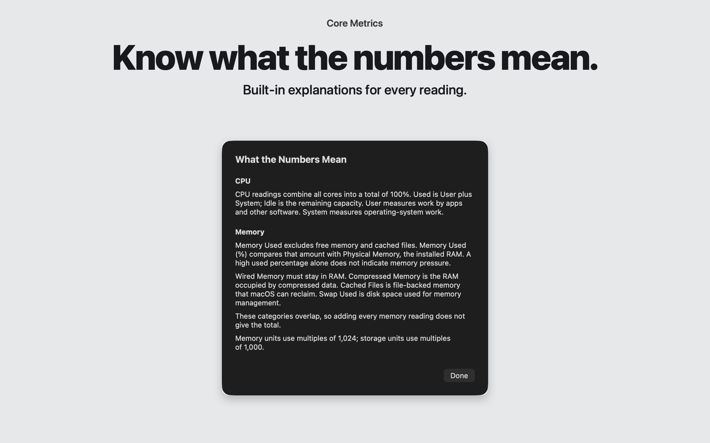

Three local 2560×1600 marketing panels with genuine signed Release 9 UI. Open each image for full-size inspection. Provenance and capture limits · Exact manifest. App Store Connect is unchanged; preference restoration and normal quit of the owned capture app are complete.


